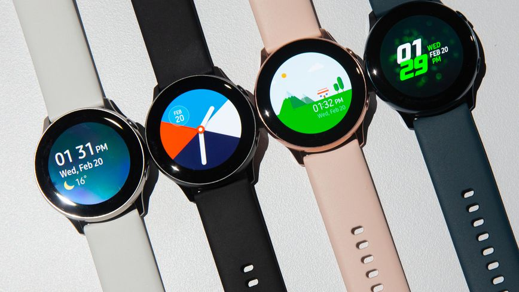

<!DOCTYPE html>
<html lang="ru">

<head>
	<meta charset="UTF-8">
	<meta name="viewport" content="width=device-width, initial-scale=1.0">
	<meta http-equiv="X-UA-Compatible" content="ie=edge">
	<link rel="stylesheet" href="css/navbar.css">
	<link rel="stylesheet" href="css/normalize.css">
	<link rel="stylesheet" href="css/bootstrap.min.css" crossorigin="anonymous">
	<link rel="stylesheet" href="css/stylechang.css">
	<link rel="stylesheet" href="https://stackpath.bootstrapcdn.com/bootstrap/4.4.1/css/bootstrap.min.css"
		integrity="sha384-Vkoo8x4CGsO3+Hhxv8T/Q5PaXtkKtu6ug5TOeNV6gBiFeWPGFN9MuhOf23Q9Ifjh" crossorigin="anonymous">
	<link href="images1/4016164-smart-watch-wristwatch_112949.ico" rel="shortcut icon" type="image/x-icon" />
	<title>Smart Review</title>
</head>

</html>


<body>
	<div id="loader_perc"></div>
	<div id="page-preloader" class="preloader">
		<div class="elements">
		</div>
		<div class="elements2"></div>
		<div class="elements3"></div>
		<div class="loader">

			<div class="lines">
				<div class="first-i"></div>
				<div class="second-i"></div>
				<div class="second-d dot"></div>
				<div class="first-d dot"></div>
				<div class="third-d dot"></div>
				<div class="fourth-d dot"></div>
			</div>
		</div>
	</div>
	<div class="menu">

		<div class="section">
		</div>
		<a href="#" class="menu-btn">
			<span></span>
		</a>
		<div class="nav-logo"> Smart Review
		</div>
		<nav class="menu-list">
			<a class="first" href="indexlast.html">Обзоры</a>
			<a class="second" href="index.html">Главная</a>
			<a class="third" href="indexhelp.html">Помощь</a>
		</nav>
		<div class="menu-cont">
			<a href="" class="face mr-2"></a>
			<a href="" class="inst mr-2"></a>
			<a href="https://vk.com/id295769082" class="vk"></a>
		</div>
	</div>


	<div class="contant pb-5">


		
			
			</div>
			<div class="vvedenie-block vvedenie1">
				<div class="contantblock contantblock-1">
					<div class="container">
				<h3>Выбор смарт часов</h3>
				<p>Умные часы наконец-то достигли того уровня, что
				они по-настоящему умные. От запуска приложений до отображения уведомлений на смартфоне и отслеживания вашего
				сердечного ритма - последние новинки умных часов делают гораздо больше, чем просто показывают время. Но какие
				купить? И чтобы выбрать те часы, которые вам подойдут, следуйте следующим пунктам:
				<ul>
					<a href="#first">Совместимость с смартфоном</a><br>
					<a href="#second">Приложения</a><br>
					<a href="#third">Фитнес трекер или Смарт часы</a><br>
					<a href="#fourth">Сотовая связь</a><br>
					<a href="#fifth">Автономность</a><br>
					<a href="#sixth">Цена</a><br>
					<a href="#seven">Стиль</a>
				
				</ul>  
				</p>
				</div>
					</div>
				
<a name="first"></a>
				<div style="background-color: aliceblue;" class="contantblock contantblock-2">
					<div class="container">
				<h3>Выберите часы, совместимые с вашим телефоном</h3>
				<p>
				Естественно, первое, что вы захотите рассмотреть при покупке умных часов, это совместимость. Большинство доступных в наше время умных часов совместимы как с Android, так и с IOS.
				Но смарт часы Samsung раскрывают свой полный функционал только в связи с устройсвами Samsung.
				А смарт часы от Apple могут работать только в связи с устройсвами Iphone. </p>
				</div>
</div>
				
<a name="second"></a>
				<div class="contantblock contantblock-3">
					<div class="container">
				<h3>А как насчет приложений?</h3>
				<p>
				Что отличает умные часы от тупых часов? Много вещей, но, как научили нас смартфоны , приложения могут быть самыми
				важными.

				Большинство часов, которые нам нравятся, оснащены полноценными магазинами приложений, в которых есть все - от
				Uber и Yelp до калькулятора - да, на ваше запястье. Как и в случае со смартфонами, доступность приложений - это
				хороший способ определить, какой продукт получить, поэтому перед покупкой обязательно ознакомьтесь с выбором
				приложений для каждой модели.
				
				<br>

				И если вы ищете приложения, то сейчас Apple - ваш лучший выбор. На сегодняшний день Apple Watch насчитывает самое
				большое количество высококачественных приложений и именитых разработчиков. Wear OS также имеет свою долю, и Fibit
				OS наверстывает упущенное, но интерес разработчиков, похоже, в первую очередь проявляется к Apple. Tizen от
				Samsung, похоже, не радует большинство разработчиков.
				</p>
</div>
</div>
<a name="third"></a>
<div style="background-color: aliceblue;" class="contantblock contantblock-4">
	<div class="container">
				<h3>Фитнес-трекер против Smartwatch</h3>
				<p>
				Если вам не нужен гаджет на обоих запястьях (на мой взгляд, не самый лучший вид), вам понадобятся умные часы,
				которые могут выполнять двойную функцию фитнес-трекера, или любой другой носимый гаджет, о котором вы мечтали.
				Большинство умных часов способны отслеживать основные действия, такие как шаги, но вам необходимо внимательно
				следить за любыми дополнительными функциями.
				<br>
				Например, в Apple Watch Series 5 есть GPS, поэтому он может отслеживать ваши пробежки без помощи сопутствующего
				устройства. У этого также есть датчик сердечного ритма. Не только это, но и функция ЭКГ позволяет вам
				генерировать PDF вашего сердечного ритма, которым вы можете поделиться с врачом. Конечно, это также самый дорогой
				продукт в этом списке. Fitbit Ionic и Versa 2 стоят дешевле и отслеживают более продвинутые показатели
				пригодности, чем большинство конкурентов, но имеют меньше возможностей для сторонних приложений, поэтому есть
				некоторый компромисс.
				<br>
				Посмотрите внимательно и выберите часы, которые отслеживают действия, которые вы хотите отслеживать.
				
				</p>
	</div>
	</div>
	<a name="fourth"></a>
	<div class="contantblock contantblock-5">
		<div class="container">
				<h3>Сотовая связь</h3>
				<p>
				Сотовая связь позволяет вам совершать звонки, отправлять текстовые сообщения, слушать музыку, загружать
				приложения и делать все, что требует подключения к Интернету, без необходимости подключения к вашему телефону.
				Сотовые Apple Watch Series 5 имеют надбавку в 100 долларов по сравнению со стандартной версией, и вы также должны
				заплатить, чтобы добавить их в свой тарифный план - большинство операторов взимают дополнительно 10 долларов в
				месяц.

				<br>


				Стоит ли это удобство для вас, зависит от того, для чего вы планируете использовать часы. Если вы хотите иметь
				возможность транслировать музыку во время упражнений, но хотите оставить свой телефон в раздевалке или дома,
				сотовая связь может пригодиться. Однако, если у вас всегда есть телефон, вы можете сэкономить деньги и пропустить
				его.
				</p>
				</div>
</div>
	<a name="fifth"></a>
			<div style="background-color: aliceblue;" class="contantblock contantblock-6">
				<div class="container">
				<h3>Срок службы батареи</h3>
				<p>
				Вам не нужны умные часы с хорошим временем автономной работы, верно? Хорошо, потому что ты не получишь это. Часы
				с полноцветными дисплеями, похожими на смартфоны, такие как часы Apple Watch и Wear OS, работают всего около
				суток без подзарядки. Как и ваш телефон, вам захочется каждую ночь бросать их в зарядное устройство перед тем,
				как лечь спать. И большинство часов, попадающих в эту категорию, имеют экраны, которые отключаются через
				несколько секунд. Чтобы проверить время, вам нужно либо активировать дисплей с помощью физической кнопки, либо
				жестом, например, поднесите его к лицу.
				<br>
				В целом, вы получите лучшее время автономной работы с одним из часов Fitbit. Они, как правило, длятся около
				четырех дней, прежде чем понадобиться заряд Это означает, что вы можете надевать их на кровать, чтобы отслеживать
				свой сон, что вы не можете делать с часами, которые нужно заряжать каждую ночь.</p>
				
				</div>
				</div>
				<a name="sixth"></a>
				<div class="contantblock contantblock-7">
					<div class="container">
				<h3>Цена</h3>
				<p>
				Умные часы могут быть очень дорогими, но это не значит, что вам нужно потратить много денег, чтобы получить
				хорошие. Да, керамический Apple , часы Герма è s обязательно обратить большое внимание, но на $ 1249 (и выше), вы
				можете купить шесть FitBit Versas. Если вы впервые покупаете умные часы, возможно, вам стоит подумать о том,
				чтобы пойти по менее дорогому маршруту, если вы не наденете его слишком много.</p>
				
					</div>
					</div>
				
				
				<a name="seven"></a>
				<div class="contantblock contantblock-9">
					<div class="container">
				<h3>Купи это для внешности, не покупай это для жизни</h3>
				<p>
				Давай не будем забывать: ты тоже будешь носить эту вещь. И в отличие от вашего Timex, он, вероятно, не будет
				оставаться стильным годами. Дизайн SmartWatch быстро меняется, поэтому держитесь, пока не найдете то, что
				действительно хотите надеть. И имейте в виду, что умные часы по-прежнему являются гаджетами. Наступающий год,
				несомненно, принесет новые итерации практически всех часов в этом списке, не говоря уже о множестве совершенно
				новых.</p>
				</div>
				</div>
				

				
				Битва за недвижимость на запястье быстро накаляется. Это хорошая новость для потребителей, так как это может
				привести к еще лучше - и лучше выглядящий - устройства. Я не удивлюсь, если этот список будет читаться совершенно
				по-другому в следующий раз, когда вы его увидите. Но если вы ищете лучшие умные часы, доступные сегодня, варианты
				здесь - лучшие, которые мы видели до сих пор.
			</div>

	<div class="underground">
		<div class="container">
			<div class="row underground-block">
				<div class="underground-title col-sm-6 col-12 mb-sm-0 mb-3">
					Smart Watches</div>
				<div class="underground-title__images col-sm-6 col-12 mb-sm-0 mb-3"><a href="" class=" mr-2"></a>
					<a href="" class=" mr-2"></a>
					<a href="https://vk.com/id295769082" class=""></a></div>
			</div>
			<div class="underground-links">
				<div class="row">

					<div class="col-lg-4 col-sm-6 col-12 ">
						<a href="indexchange.html">Помощь в выборе смарт часов</a>
					</div>
					<div class="col-lg-4 col-sm-6 col-12 ">
						<a href="indexhelp.html">Помощь</a>
					</div>
					<div class="col-lg-4 col-sm-6 col-12 ">
						<a href="indextopsm.html">Топ смарт часов</a>
					</div>
					<div class="col-lg-4 col-sm-6 col-12 ">
						<a href="indexapple.html">Обзоры Apple watch</a>
					</div>
					<div class="col-lg-4 col-sm-6 col-12 ">
						<a href="indextoptrack.html">Топ фитнес браслетов</a>
					</div>
					<div class="col-lg-4 col-sm-6 col-12 ">
						<a href="indexlast.html">Обзоры смарт часов</a>
					</div>

				</div>
			</div>

		</div>
	</div>
	</div>
			


	<script src="https://code.jquery.com/jquery-3.4.1.slim.min.js"
		integrity="sha384-J6qa4849blE2+poT4WnyKhv5vZF5SrPo0iEjwBvKU7imGFAV0wwj1yYfoRSJoZ+n" crossorigin="anonymous">
	</script>

	<script src="js/bootstrap.min.js" crossorigin="anonymous">
	</script>
	<script src="js/navbar.js"></script>
	<script src="js/preloader.js"></script>
</body>

</html>